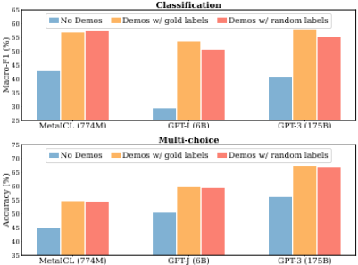
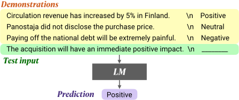
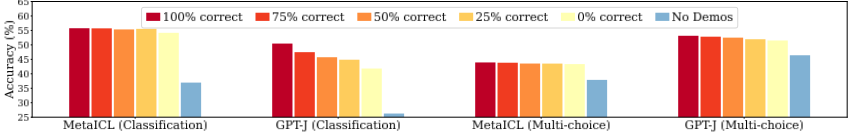
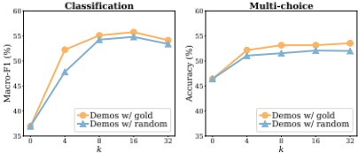
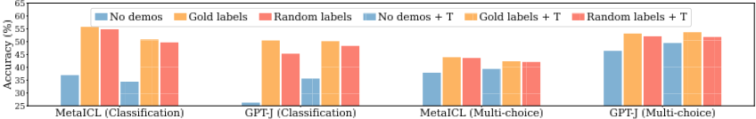
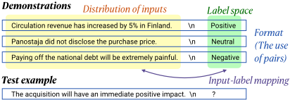
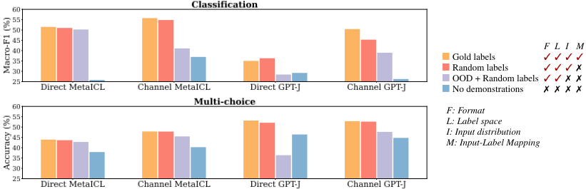
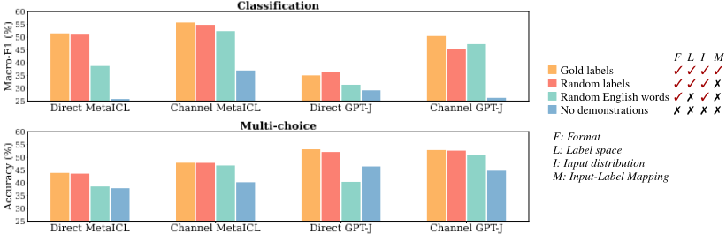
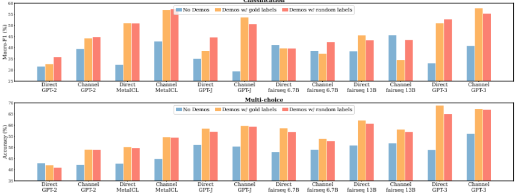
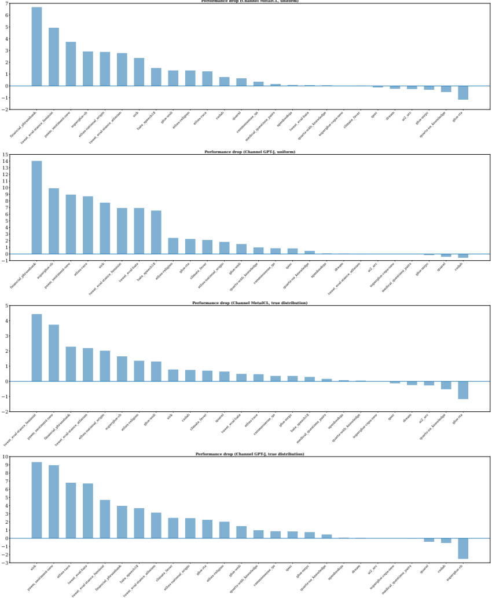

Rethinking the Role of Demonstrations: What Makes In-Context Learning Work?
重新审视示例演示（Demonstrations）的作用：什么让 In-Context Learning 有效？
简介
论文实证回答了 few-shot 提示中示例（demonstrations）究竟贡献了什么：在 12 个模型（含 GPT-3、GPT-J、MetaICL）、26 个分类/多选数据集上系统替换演示内容后发现，把 gold labels 换成随机标签性能仅下降 0-5% 绝对值，说明模型并不依赖演示中的 input-label 映射。真正驱动性能的是三件事：label space、输入文本的分布、以及 input-label 配对的格式。方法上通过一系列受控消融（OOD 输入、随机英文词标签、仅输入/仅标签、改变正确标签比例与示例数 k）逐一隔离各因素影响，并使用 direct 与 channel 两种推理方法。对团队的直接启示是：构造 few-shot 上下文时，格式正确与输入同分布比逐条正确标注更关键，甚至可用无标注输入配随机标签获得接近 k-shot 的效果；但结论限于分类/多选任务，CoT 等场景不适用，且前提是任务语义已在预训练中存在。
问题
In-context learning 虽持续优于 zero-shot，但此前缺乏对'模型如何从演示中学习、演示的哪些方面贡献了最终任务性能'的理解。论文要回答：演示中的 ground truth input-label 映射是否必要？如果不是，究竟是什么让 in-context learning 有效？
方法
大规模受控消融实验：在 12 个 decoder-only LM（774M 至 175B，含 GPT-3、GPT-J、MetaICL、fairseq LM、GPT-2）与 26 个分类/多选数据集上，对比 no demonstrations、gold labels、random labels 三种设置；再通过改变正确标签比例（0-100%）、示例数 k、manual/minimal 模板做消融；进一步设计演示变体（OOD 输入、随机英文词标签、no labels、labels only）以隔离四个方面的影响：input-label 映射、输入文本分布、label space、配对格式；全程使用 direct 与 channel 两种推理方法，并以 meta-trained 的 MetaICL 对照分析 meta-training 的放大效应。
关键结果
将 gold labels 替换为随机标签后性能仅边际下降：各模型绝对下降 0-5%，multi-choice 平均 1.7%，classification 2.6%；MetaICL 仅 0.1-0.9%
全部使用错误标签仍显著优于 no demonstrations：MetaICL（classification）、MetaICL（multi-choice）、GPT-J（multi-choice）分别保留 92%、100%、97% 的提升
k≥8 后增加示例数收益很小（gold 与 random labels 均如此）；gold 换 random 的下降在 0.8-1.6%（k=4 classification 例外为 4.4%）；manual 模板下趋势不变，且 manual 模板并不总是优于 minimal 模板
用 OOD 输入替换同分布输入使性能绝对下降 3-16%（Direct MetaICL 例外），说明输入文本分布是关键驱动因素
direct 模型中，label space 内随机标签 vs 随机英文词标签差距 5-16% 绝对值；channel 模型仅 0-2%
保持配对格式时，仅用随机句子+标签集可保留 95%/82% 的 ICL 提升（Direct MetaICL classification/multi-choice）；channel 模型仅用无标注输入+随机英文词可保留 82%/87%/86%/75%
从真实标签分布（而非均匀分布）采样随机标签进一步缩小差距：Channel MetaICL 1.9%→1.3%，Channel GPT-J 5.0%→3.5%
meta-training（MetaICL）放大上述效应：对 input-label 映射几乎零依赖，更依赖格式等更易利用的简单特征
极端反例：financial_phrasebank + GPT-J 上 gold vs random labels 差距近 14% 绝对值
创新点
据作者所述，这是首个实证分析'为什么 in-context learning 优于 zero-shot'的工作；此前工作集中于更好的问题形式化、示例选择、meta-training 与 instruction-following，而非理解机制。本文给出反直觉结论：ground truth input-label 映射几乎不重要，性能增益主要来自 label space、输入分布与格式的独立规约，并据此提出'zero-shot 基线可被显著抬高'与'模型在测试时并未学习新任务的 input-label 对应'的新视角。
团队参考意义
相关度级别：high
命中能力域：3.2 提示工程 | 3.1 上下文工程与记忆
理由：论文直接命中 3.2 提示工程（in-context learning 与演示设计是其核心技术之一），并强相关 3.1 上下文工程：它系统回答了'往上下文里放什么才真正有效'——格式、label space、输入分布比正确标注更重要。对以'用好模型'为核心、不训练模型的团队而言，这直接改变 few-shot 提示的构建策略与成本结构（可省去逐条人工标注演示示例），也为提示词资产管理与评测设计提供依据：不能假设模型从演示中'学会'了新任务，需验证任务语义是否已在预训练中存在。
建议动作：深入精读并做内部分享
中文全文
arXiv:2202.12837v2 [cs.CL] 20 Oct 2022
Rethinking the Role of Demonstrations: What Makes In-Context Learning Work?
重新思考示例的作用：是什么让上下文学习（in-context learning）发挥作用？
Sewon Min 1,2 Mike Lewis 2
Hannaneh Hajishirzi 1,3
Luke Zettlemoyer 1,2
Xinxi Lyu 1
Ari Holtzman 1
Mikel Artetxe 2
1 华盛顿大学
2 Meta AI
3 艾伦人工智能研究所
{sewon,alrope,ahai,hannaneh,lsz}@cs.washington.edu {artetxe,mikelewis}@meta.com
Abstract
大语言模型（Large Language Models, LMs）能够进行上下文学习（in-context learning）——仅通过推理即可完成新任务，其方式是以少量输入-标签对（示例，demonstrations）为条件，并对新的输入做出预测。然而，对于模型究竟是如何学习的，以及示例的哪些方面对最终任务性能有所贡献，人们一直缺乏充分的理解。在本文中，我们表明，事实上并不需要真实标签的示例——将示例中的标签随机替换，在一系列分类和多项选择任务上几乎不会损害性能，并且这一结论在包括 GPT-3 在内的 12 个不同模型上均保持一致。相反，我们发现示例的其他方面才是最终任务性能的关键驱动因素，包括它们提供了以下几方面的少量示例：（1）标签空间；（2）输入文本的分布；（3）序列的整体格式。综合而言，我们的分析为理解上下文学习如何以及为何有效提供了一种新途径，同时也引出了新的问题：仅通过推理，究竟能从大语言模型中学到多少东西。
1 Introduction
大型语言模型（Large Language Models, LMs）仅需以少量输入-标签对（即示例，demonstrations）为条件，便能在下游任务上展现出令人瞩目的性能；这类推理方式被称为上下文学习（in-context learning）(Brown et al., 2020)。尽管上下文学习在广泛的任务上持续优于零样本推理（zero-shot inference）(Zhao et al., 2021; Liu et al., 2021)，但人们对其工作原理、以及示例的哪些方面促成了最终任务性能仍知之甚少。
在本文中，我们表明，真实示例（ground truth demonstrations）实际上并非实现有效上下文学习所必需（第 4 节）。具体而言，将示例中的标签替换为随机标签，在一系列分类和多项选择任务上几乎不会损害性能（图 1）。该结果在包括 GPT-3 系列在内的 12 个不同模型上均保持一致 (Radford et al., 2019; Min et al., 2021b; Wang and Komatsuzaki, 2021; Artetxe et al., 2021; Brown et al., 2020)。这强烈表明——与直觉相反——模型在执行任务时并不依赖示例中的输入-标签映射。

进一步的分析考察了示例中究竟哪些部分真正对性能有所贡献。我们确定了示例可能涉及的各个方面（例如标签空间和输入文本的分布），并评估了示例的一系列变体，以量化每个方面的影响（第 5 节）。我们发现：（1）示例所指定的标签空间和输入文本分布都是上下文学习的关键（无论标签对于各个输入而言是否正确）；（2）指定整体格式同样至关重要，例如，当标签空间未知时，使用随机英文单词作为标签显著优于不使用任何标签；以及
（3）以上下文学习为目标进行元训练（meta-training）(Min et al., 2021b) 会放大这些效应——模型几乎只利用示例中较为简单的方面（如格式），而非输入-标签映射。
总而言之，我们的分析为理解示例在上下文学习中的作用提供了一种新途径。我们通过实验表明，模型（1）与直觉相反，并不像我们以为的那样依赖示例中提供的真实输入-标签映射（第 4 节），并且（2）尽管如此，仍能从了解示例所指定的
标签空间和输入分布中获益（第 5 节）。我们还讨论了更广泛的影响，例如对于模型在测试时的学习我们能得出哪些结论，以及未来工作的可能方向（第 6 节）。=
2 Related Work
大型语言模型是众多下游任务取得强大性能的关键 (Devlin et al., 2019; Radford et al., 2019; Liu et al., 2019; Raffel et al., 2020; Lewis et al., 2020)。尽管微调一直是迁移到新任务的常用方法 (Devlin et al., 2019)，但对非常大的模型（例如 ≥ 10B 参数）进行微调往往并不现实。Brown et al. (2020) 提出上下文学习（in-context learning）作为学习新任务的另一种方式。如图 2 所示，语言模型（LM）仅通过推理即可学习新任务：它以拼接后的训练数据作为示例为条件，而不进行任何梯度更新。
自提出以来，上下文学习一直是大量研究的焦点。已有工作提出了更好地表述该问题的方法 (Zhao et al., 2021; Holtzman et al., 2021; Min et al., 2021a)、为示例选择带标签样本的更好方法 (Liu et al., 2021; Lu et al., 2021; Rubin et al., 2021)、以显式上下文学习目标进行的元训练 (Chen et al., 2021; Min et al., 2021b)，以及作为上下文学习一种变体的指令遵循学习 (Mishra et al., 2021b; Efrat and Levy, 2020; Wei et al., 2022a; Sanh et al., 2022)。与此同时，一些工作报告了上下文学习的脆弱性和过度敏感性 (Lu et al., 2021; Zhao et al., 2021; Mishra et al., 2021a)。
相对而言，用于理解上下文学习为何有效的工作较少。Xie et al. (2022) 提供了理论分析，表明上下文学习可以被形式化为贝叶斯推断，表 1：实验中使用的 LM 列表：GPT-2 (Radford et al., 2019)、MetaICL (Min et al., 2021b)、GPT-J (Wang and Komatsuzaki, 2021)、fairseq LMs (Artetxe et al., 2021) 以及 GPT-3 (Brown et al., 2020)。“Public”表示模型权重是否公开；“Meta-trained”表示模型是否以上下文学习为目标进行了元训练。† 我们使用 Artetxe et al. (2021) 中的稠密模型，为方便起见将其称为 fairseq LMs。‡ 我们使用 Davinci API（基础版本，而非 instruct 版本），并遵循 Gao et al. (2021) 和 Artetxe et al. (2021) 的做法假设其为 175B。

| Model | # Params | Public | Meta-trained |
|---|---|---|---|
| GPT-2 Large | 774M | ✓ | ✗ |
| MetaICL | 774M | ✓ | ✓ |
| GPT-J | 6B | ✓ | ✗ |
| fairseq 6.7B † | 6.7B | ✓ | ✗ |
| fairseq 13B † | 13B | ✓ | ✗ |
| GPT-3 | 175B ‡ | ✗ | ✗ |
| Model | # Params | Public | Meta-trained |
该推断利用示例来恢复潜在概念。Razeghi et al. (2022) 表明，上下文学习的性能与预训练数据中的词频高度相关。据我们所知，本文是首个提供实证分析、探究上下文学习为何能比零样本推理取得性能提升的工作。我们发现，示例中的真实输入-标签映射只有很小的影响，并测量了示例中更细粒度方面的影响。
3 Experimental Setup
我们描述分析中所使用的实验设置（第 4 节和第 5 节）。
模型：我们总共在 12 个模型上进行实验。其中包括 6 个语言模型（LM）（表 1），它们均为仅解码器（decoder-only）的稠密语言模型（dense LM）。我们按照 Min et al. (2021a) 的做法，对每个 LM 使用 direct 和 channel 两种推理方法。这些 LM 的规模从 774M 到 175B 不等。我们纳入了进行实验之时最大的稠密语言模型（GPT-3），以及当时公开发布的最大稠密语言模型（fairseq 13B）。我们还纳入了 MetaICL，它以 GPT-2 Large 进行初始化，然后在一系列有监督数据集上以上下文学习（in-context learning）为目标进行元训练；我们确保用于评估的数据集与元训练时所使用的数据集不重叠。
![Figure 3: Results when using no-demonstrations, demonstrations with gold labels, and demonstrations with random labels in classification (top) and multi-choice tasks (bottom). The first eight models are evaluated on 16 classification and 10 multi-choice datasets, and the last four models are evaluated on 3 classification and 3 multichoice datasets. See Figure 11 for numbers comparable across all models. Model performance with random labels is very close to performance with gold labels (more discussion in Section 4.1).](assets/a505/figures/fig_3.png)
评估数据：我们在 26 个数据集上进行评估，涵盖情感分析、释义检测、自然语言推理、仇恨言论检测、问答以及句子补全（完整列表及参考文献见附录 A）。¹ 所有数据集均为分类或多项选择任务。
我们选择这些数据集的原因在于：（1）它们是真正的低资源数据集，训练示例少于 10K 个；（2）其中包含来自 GLUE（Wang et al., 2018）和 SuperGLUE（Wang et al., 2019a）的已被充分研究的基准测试（benchmark）；（3）覆盖了包括科学、社交媒体、金融等在内的多样化领域。
其他细节：除非另有说明，本文中的所有实验默认使用 k = 16 个示例作为演示（demonstrations）。示例从训练数据中均匀采样。我们使用 5 个不同的随机种子选取一组 k 个训练示例，并将实验运行 5 次。对于 fairseq 13B 和 GPT-3，由于资源有限，我们仅在 6 个数据集²的子集和 3 个随机种子³上进行实验。对于分类任务，我们报告 MacroF1³；对于多项选择任务，我们报告 Accuracy。我们先计算每个数据集在各随机种子上的平均值，然后再报告各数据集上的宏平均（macro-average）。我们使用最小模板（minimal templates）由示例构建输入序列。更多细节请参见附录 B。所有实验均可通过 github.com/Alrope123/rethinking-demonstrations 复现。
¹ 为方便起见，我们用“标签”（labels）指代任务的输出，尽管我们的数据集中包含非分类任务。
4.1 Gold labels vs. random labels
为了考察示例（demonstrations）中正确配对的输入与标签的影响——我们将其称为真实输入-标签映射（ground truth input-label mapping）——我们比较了以下三种方法。4
无示例（No demonstrations）是一种典型的零样本（zero-shot）方法，不使用任何带标注的数据。预测通过 argmax y ∈C P ( y | x ) 进行，其中 x 为测试输入，C 为由可能标签组成的一个小型离散集合。
带金标准标签的示例（Demonstrations w/ gold labels）用于典型的上下文学习（in-context learning）方法中，该方法使用 k 个带标注的示例 ( x 1 , y 1 ) ... ( x k , y k )。将 k 个输入-标签对拼接起来，通过 argmax y ∈C P ( y | x 1 , y 1 ...x k , y k , x ) 进行预测。
2 三个分类任务和三个多选题任务：MRPC、RTE、Tweet_eval-hate、OpenbookQA、CommonsenseQA、COPA。
4 在不失一般性的前提下，第 4 节和第 5 节中的所有方法均基于直接方法（direct method）进行描述，但只需交换 x 和 y 即可平凡地转换为通道方法（channel method）。
3 已知其对类别不平衡的情况效果更佳。

带随机标签的示例（Demonstrations w/ random labels）使用随机标签而非来自带标注数据的金标准标签构成。每个 x i ( 1 ≤ i ≤ k ) 与从 C 中均匀随机采样得到的 ˜ y i 配对。随后将 ( x 1 , ˜ y 1 ) ... ( x k , ˜ y k ) 拼接起来，通过 argmax y ∈C P ( y | x 1 , ˜ y 1 ...x k , ˜ y k , x ) 进行预测。
结果如图 3 所示。首先，与无示例相比，使用带金标准标签的示例能显著提升性能，5 这与此前大量研究的一致发现相符（Brown et al., 2020; Zhao et al., 2021; Liu et al., 2021）。随后我们发现，用随机标签替换金标准标签只会轻微损害性能。这一趋势在几乎所有模型上都保持一致：模型的性能下降幅度在 0-5% 的绝对值范围内。在多选题任务中替换标签的影响（平均 1.7%）小于在分类任务中的影响（绝对值 2.6%）。
这一结果表明，要取得性能提升，并不需要真实的输入-标签对。这有违直觉，因为在典型的监督训练中，正确配对的训练数据至关重要——它向模型传达了执行下游任务所需的预期输入-标签对应关系。尽管如此，模型确实在下游任务上取得了不俗的性能。这强烈表明，模型有能力恢复该任务所预期的输入-标签对应关系；然而，这并非直接来自示例中的配对。
同样值得注意的是，MetaICL 的性能下降尤其小：绝对值仅为 0.1-0.9%。这表明，以显式的上下文学习目标进行元训练，实际上会促使模型基本忽略输入-标签映射，并利用示例的其他组成部分（更多讨论见第 5.4 节）。
5 存在一些例外情况，例如，在分类任务中，Direct GPT-2、Direct GPT-J 和 Direct fairseq 6.7B 模型在许多数据集上的表现并不显著优于随机猜测；Channel fairseq 13B 的无示例性能显著优于使用真实标签的示例。因此，在后续分析中，我们对这些模型结果的讨论将相对较少。

在附录 C.2 中，我们提供了额外的结果，表明：(1) 从标签的真实分布（而非均匀分布）中选取随机标签可以进一步缩小差距；(2) 趋势可能依赖于具体数据集，尽管总体趋势在大多数数据集上是一致的。
4.2 Ablations
作为额外的消融实验，我们在 5 个分类数据集和 4 个多选数据集上进行了实验。6
正确标签的数量是否重要？为了进一步考察示例中标签正确性的影响，我们通过改变示例中正确标签的数量来进行一项消融研究。我们评估了“含 a% 正确标签的示例”（Demonstrations w/ a % correct labels，0 ≤ a ≤ 100），其由 k × a/100 个正确配对和 k × (1 - a/100) 个错误配对组成（参见附录 B 中的 Algorithm 1）。其中，a = 100 等价于典型的上下文学习（in-context learning），即使用真实标签的示例。
结果如图 4 所示。模型性能对示例中正确标签的数量相当不敏感。事实上，始终使用错误标签显著优于无示例的情况，例如，在分类任务中使用 MetaICL、在多选任务中使用 MetaICL 以及在多选任务中使用 GPT-J 时，分别保留了使用示例所带来的 92%、100% 和 97% 的提升。相比之下，GPT-J 在分类任务中随着错误标签数量的增加出现了相对显著的性能下降，例如，当始终使用错误标签时，性能下降近 10%。始终使用错误标签显著优于无示例。
6 分类任务包括：MRPC、RTE、Tweet_eval-hate、SICK、poem-sentiment；多选任务包括 OpenbookQA、CommonsenseQA、COPA 和 ARC。

尽管如此，
Is the result consistent with varying
?
We
study the impact of the number of input-label pairs ( k ) in the demonstrations. Results are reported in Figure 5. First, using the demonstrations significantly outperforms the no demonstrations method even with small k ( k = 4 ), and performance drop from using gold labels to using random labels is consistently small across varying k , in the range of 0.8-1.6%. 7 Interestingly, model performance does not increase much as k increases when k ≥ 8 , both with gold labels and with random labels. This is in contrast with typical supervised training where model performance rapidly increases as k increases, especially when k is small. We hypothesize that larger labeled data is beneficial mainly for supervising the input-label correspondence, and other components of the data like the example inputs, example labels and the data format are easier to recover from the small data, which is potentially a reason for minimal performance gains from larger k (more discussion in Section 5). =
Is the result consistent with better templates? While we use minimal templates by default, we also explore manual templates, i.e., templates that are manually written in a dataset-specific manner, taken from prior work (details in Appendix B). Figure 6 shows that the trend-replacing gold labels with random labels barely hurting performanceholds with manual templates. It is worth noting that using manual templates does not always outperform using minimal templates.
7 With an exception of 4.4% in classification with k = 4 , likely due to a high variance with a very small value of k .

5 Why does In-Context Learning work?
第4节表明，演示中的真实输入-标签映射对上下文学习（in-context learning）所带来的性能提升几乎没有影响。本节进一步考察演示的哪些其他方面促成了上下文学习的良好性能。
我们识别出演示 ( x 1 , y 1 ) ... ( x k , y k ) 中可能提供学习信号的四个方面（如图7所示）。
与第4节针对输入-标签映射的做法一样，我们设计了演示的一系列变体，以单独量化每个方面的影响（第5.1-5.3节）。随后，我们还进一步讨论了以上下文学习为目标进行元训练的模型所呈现的趋势（第5.4节）。在所有实验中，模型均按照第4.2节的方式，在五个分类数据集和四个多项选择数据集上进行评估。实现细节和示例演示分别参见附录B和表4。

5.1 Impact of the distribution of the input text
我们实验了 OOD 演示，这类演示包含分布外（out-of-distribution, OOD）文本，而非来自无标签训练数据的输入。具体而言，从外部语料库中随机采样一组 k 个句子 { x i, rand } k i =1，并替换演示中的 x 1 ...x k。该变体在保持标签空间和演示格式不变的情况下，评估输入文本分布的影响。
结果。图8显示，当使用 Channel MetaICL、Direct GPT-J 或 Channel GPT-J 时，用分布外输入替代来自训练数据的输入会导致性能显著下降，在分类和多项选择任务上的绝对降幅均达3-16%。在多项选择任务中使用 Direct GPT-J 的情况下，其性能甚至显著差于不使用演示的情况。Direct MetaICL 则是一个例外，我们认为这是元训练带来的效果（相关讨论见第5.4节）。
这表明，演示中的分布内输入对性能提升有显著贡献。这可能是因为以分布内文本为条件使任务更接近语言建模，因为语言模型（LM）在训练过程中始终以分布内文本为条件。
5.2 Impact of the label space
我们还实验了使用随机英文单词的演示（demonstrations w/ random English words），即对所有 k 对样本使用随机英文单词作为标签。具体而言，我们采样得到一个英文单词的随机子集 C rand，其中 |C rand| = |C|，并将 ˜ y i ∈ C rand 与 x i 随机配对。该变体在保持输入文本分布和演示格式不变的前提下，评估标签空间的影响。
结果。根据图9，直接模型（direct models）和通道模型（channel models）呈现出不同的模式。对于直接模型而言，在标签空间内使用随机标签与使用随机英文单词之间的性能差距十分显著，绝对差距介于5-16%之间。这表明以标签空间为条件对性能提升有显著贡献。即使对于没有固定标签集合的多项选择任务也是如此——我们假设多项选择任务仍然存在模型所利用的特定选项分布（例如 OpenBookQA 数据集中诸如"Bolts"或"Screws"之类的对象）。
另一方面，移除输出空间并不会导致通道模型出现显著下降：绝对下降为0-2%，有时甚至出现提升。我们假设这是因为通道模型仅以标签为条件，因而无法从知晓标签空间中获益。这与必须生成正确标签的直接模型形成了对比。
5.3 Impact of input-label pairing
第5.1节和第5.2节关注的是尽可能保留演示格式的变体。本节则探索改变格式的变体。虽然格式涉及诸多方面，但我们仅进行最小限度的修改，以移除输入与标签之间的配对。具体而言，我们评估了无标签演示（其中语言模型（LM）以 x 1 ...x k 的拼接为条件）以及仅标签演示（其中LM以 y 1 ...y k 的拼接为条件）。这些消融实验分别提供了“随机英文单词演示”和“分布外（OOD）输入演示”的无格式对应版本。

![Figure 10: Impact of the format, i.e., the use of the input-label pairs. Evaluated in classification (top) and multichoice (bottom). Variants of demonstrations without keeping the format ( ■ and ■ ) are overall not better than no demonstrations ( ■ ). Keeping the format is especially significant when it is possible to achieve substantial gains with the label space but without the inputs ( ■ vs. ■ in Direct MetaICL), or with the input distribution but without the labels ( ■ vs. ■ in Channel MetaICL and Channel GPT-J). More discussion in Section 5.3.](assets/a505/figures/fig_10.png)
结果。根据图10，移除格式的效果与无演示的情况相当或更差，这表明了格式的重要性。这可能是因为以输入-标签对序列为条件会促使模型模仿整体格式，并在给定测试输入时按预期完成新的示例。
更有趣的是，仅使用输入或仅使用标签时，保留格式在维持大部分性能提升方面发挥了重要作用。例如，使用 Direct MetaICL 时，在分类和多项选择任务中，仅需从语料库中采样随机句子并将其与标签集合随机配对（图10中的 ■），即可分别保留上下文学习（金标准标签演示）所带来提升的95%和82%。类似地，对于通道模型，在 MetaICL 分类、GPTJ 分类、MetaICL 多项选择和 GPT-J 多项选择中，仅需将无标注训练数据中的每个输入与一个随机英文单词配对（图10中的 ■），即可分别保留上下文学习所带来提升的82%、87%、86%和75%。在所有这些情形中，移除输入（而非使用OOD输入）或移除标签（而非使用随机英文单词）都会导致显著更差的结果，这表明保留输入-标签对的格式是关键。
5.4 Impact of meta-training
与其他模型不同，MetaICL 是以上下文学习（in-context learning）为目标进行训练的，这与近期一些工作相一致，即在大规模有监督数据集集合上进行多任务训练（称为元训练，metatraining），以实现对新任务的泛化（Aghajanyan et al., 2021; Khashabi et al., 2020; Wei et al., 2022a; Sanh et al., 2022）。我们希望通过细致考察 MetaICL 的结果，更好地理解这种元训练与我们的发现之间的关系。特别地，我们观察到，迄今为止所看到的模式在 MetaICL 上比在其他模型上明显更为显著。例如，真实输入-标签映射（ground truth）的作用甚至更小，而保持示例（demonstrations）格式的作用甚至更大。在 Direct MetaICL 中，输入-标签映射和输入分布的影响几乎为零；在 Channel MetaICL 中，输入-标签映射和输出空间的影响几乎为零。
基于这一观察，我们假设：元训练促使模型只利用示例中较为简单的方面，而忽略其他方面。这一假设基于我们的直觉：(1) 输入-标签映射可能更难被利用；(2) 格式可能更容易被利用；(3) 与模型所条件依赖的文本空间相比，模型被训练去生成的文本空间可能更容易被利用。8
6 Discussion & Conclusion
本文研究了示例（demonstrations）在上下文学习（in-context learning）取得成功的过程中所起的作用。我们发现，示例中真实的输入-标签映射远没有人们想象的那么重要——将示例中的金标准标签（gold labels）替换为随机标签，只会使性能略微下降。随后，我们识别出示例中的一系列方面，并考察究竟哪些方面真正带来了性能提升。结果表明：(1) 性能提升主要来自对输入空间和标签空间的独立指定；(2) 只要使用正确的格式，模型即使仅使用输入或仅使用标签集，仍能保留高达 95% 的性能提升；(3) 以上下文学习为目标的元训练会放大这些趋势。综合来看，我们的发现为理解上下文学习提供了一系列更广泛的启示，也为未来的工作指明了方向。
模型是否在测试时进行学习？如果我们采用学习的严格定义，即捕捉训练数据中给出的输入-标签对应关系，那么我们的发现表明，语言模型（LMs）并不会在测试时学习新任务。我们的分析表明，模型可能会忽略由示例所定义的任务，转而利用来自预训练的先验知识。
8 也就是说，直接模型（direct model）对标签空间的利用效果优于对输入分布的利用效果，而通道模型（channel model）对输入分布的利用效果优于对标签空间的利用效果。
然而，学习新任务也可以作更宽泛的解释：它可能包括适应特定的输入分布与标签分布以及示例所提示的格式，并最终能够更准确地做出预测。按照这种学习的定义，模型确实从示例中学习了任务。我们的实验表明，模型确实利用了示例的各个方面，并取得了性能提升。
语言模型的容量。模型在执行下游任务时并不依赖示例中的输入-标签对应关系。这表明，模型仅凭语言建模目标就已经学习到了输入-标签对应关系（这一隐含概念），例如，将正面评论与"positive"一词关联起来。这与 Reynolds 和 McDonell (2021) 的观点一致，他们认为示例的作用在于任务定位，而执行任务的内在能力是在预训练阶段获得的。9
一方面，这表明语言建模目标已经带来了强大的零样本（zero-shot）能力，尽管从朴素的零样本准确率来看，这一点并不总是显而易见。另一方面，这表明，对于输入-标签对应关系尚未被语言模型（LM）捕捉到的任务，上下文学习（in-context learning）可能无法奏效。这引出了一个研究问题，即如何在上下文学习无法解决的自然语言处理（NLP）问题上取得进展：我们是需要一种更好的方法来提取 LM 中业已存储的输入-标签映射，还是需要一个能学习更广泛任务语义的 LM 目标的更优变体，抑或是需要通过在有标注数据上进行微调来提供显式监督。
与指令遵循模型（instruction-following models）的联系。先前的工作发现，训练模型去读取任务的自然语言描述（称为指令）并在推理时执行新任务，是一种颇有前景的做法（Mishra et al., 2021b; Efrat and Levy, 2020; Wei et al., 2022a; Sanh et al., 2022）。我们认为，示例与指令对 LM 而言在很大程度上扮演着相同的角色，并据此假设我们的发现同样适用于指令遵循模型：指令促使模型恢复其本已具备的能力，但并不监督模型去学习新的任务语义。这一点已得到 Webson and Pavlick (2022) 的部分验证，他们表明，当指令不相关或具有误导性时，模型性能并不会大幅下降。关于指令遵循模型的更多分析，我们留待未来的工作。
9 然而，尽管 Reynolds and McDonell (2021) 声称示例因此是不必要的，但我们认为，使用示例实际上正是提示模型执行任务的最明确、最简单的方式。
Significantly improved zero-shot performance.
我们的一个关键发现是，无需使用任何标注数据，只需将每个无标注输入与一个随机标签配对并将其用作示例，就有可能取得接近 k-shot 的性能。这意味着我们的零样本（zero-shot）基线水平显著高于先前的认知。10 未来的工作可以在放宽对无标注训练数据访问假设的前提下，进一步提升零样本性能。
Limitation
任务与数据集类型的影响。本文聚焦于来自成熟自然语言处理（NLP）基准测试（benchmark）、具有真实自然语言输入的任务。正如 Rong (2021) 所观察到的，输入更为受限的合成任务实际上可能更多地使用真实标签（ground truth labels）。
我们通过考察多个 NLP 数据集上的平均性能来报告宏观层面的分析，但不同数据集的表现可能各不相同。附录 C.2 讨论了这一方面，包括以下发现：在某些数据集-模型对中，使用真实标签与使用随机标签之间存在更大的差距（例如，在最极端的情况下，使用 GPT-J 时在 financial_phrasebank 数据集上的绝对差距接近 14%）。自我们论文的第一个版本发布以来，Kim et al. (2022) 表明，使用取反标签（negated labels）会大幅降低分类性能。11 我们认为，理解模型在多大程度上需要真实标签才能成功地进行上下文学习（in-context learning）是十分重要的。
对生成任务的扩展。我们的实验仅限于分类和多项选择任务。我们假设，对于生成等开放集任务中的上下文学习，真实输出可能并非必需，但我们将其留待未来工作。将我们的实验扩展到此类任务并非易事，因为这需要构造输出的某种变体，使其具有不正确的输入-输出对应关系，同时保持正确的输出分布（根据我们在第 5 节中的分析，这一点十分重要）。
10 我们所采取的视角是，使用无标注训练数据是允许的（Kodirov et al., 2015; Wang et al., 2019b; Schick and Schütze, 2021）。
11 请注意，Kim et al. (2022) 是通过与使用取反标签的性能进行插值来估计随机标签性能的，而我们的论文则是均匀地采样随机标签。
自我们论文的第一个版本发布以来，Madaan and Yazdanbakhsh (2022) 使用思维链（chain-of-thought, CoT）提示（Wei et al., 2022b）进行了类似的分析，该方法通过生成推理依据（rationale）来完成诸如数学问题等复杂任务。Madaan and Yazdanbakhsh (2022) 表明，虽然在示例中简单地使用随机推理依据（例如，与来自另一个示例的推理依据配对）会显著降低性能，但其他类型的反事实推理依据（例如，错误的方程）并不会像我们预想的那样大幅降低性能。关于推理依据的哪些方面重要、哪些方面不重要，更多讨论请参见 Madaan and Yazdanbakhsh (2022)。
A Full Datasets
我们共纳入 26 个数据集，如下所示：financial_phrasebank (Malo et al., 2014)、poem_sentiment (Sheng and Uthus, 2020)、medical_questions_pairs (McCreery et al., 2020)、glue-mrpc (Dolan and Brockett, 2005)、glue-wnli (Levesque et al., 2012)、climate_fever (Diggelmann et al., 2020)、glue-rte (Dagan et al., 2005; Bar-Haim et al., 2006; Giampiccolo et al., 2007; Bentivogli et al., 2009)、superglue-cb (de Marneffe et al., 2019)、sick (Marelli et al., 2014)、hate_speech18 (de Gibert et al., 2018)、ethos-national_origin (Mollas et al., 2020)、ethos-race (Mollas et al., 2020)、ethos-religion (Mollas et al., 2020)、tweet_eval-hate (Barbieri et al., 2020)、tweet_eval-stance_atheism (Barbieri et al., 2020)、tweet_eval-stance_feminist (Barbieri et al., 2020)、quarel (Tafjord et al., 2019a)、openbookqa (Mihaylov et al., 2018)、qasc (Khot et al., 2020)、commonsense_qa (Talmor et al., 2019)、ai2_arc (Clark et al., 2018)、codah (Chen et al., 2019)、superglue-copa (Gordon et al., 2012)、dream (Sun et al., 2019)、quartz-with_knowledge (Tafjord et al., 2019b)、quartz-no_knowledge (Tafjord et al., 2019b)。数据集的选择遵循 Min et al. (2021b) 中的低资源数据集，并使用 5 个随机种子，采用完全相同的 k-shot 训练数据。我们使用 HuggingFace 版本的数据 (Lhoest et al., 2021)，并遵循 Ye et al. (2021) 的做法，使用开发集数据进行评估。统计数据见表 2。
B Experimental Details
示例模板 我们遵循 Ye et al. (2021); Min et al. (2021b); Logan IV et al. (2021) 的做法，使用最简格式将输入转换为序列（例如多个输入的拼接），并按原样使用各数据集的标签词。我们还探索了取自先前工作的手工模板 (Holtzman et al., 2021; Zhao et al., 2021)，如第 4.2 节所述，尽管我们发现使用这些模板并不总是比使用最简模板更好。因此，我们使用最简模板进行主要实验。表 3 中给出了示例模板。
示例的格式 我们遵循每个模型的标准来格式化示例，这些标准要么来自先前工作中的探索，要么来自官方教程中提供的示例代码。对于 GPT-2，我们用空格分隔输入与标签，并用空格分隔每个示例样本。对于 MetaICL、GPT-J 和 GPT-3，我们用换行符 ( \n ) 分隔输入与标签，用三个换行符分隔每个示例样本。对于 fairseq 模型，我们使用换行符来分隔输入与标签以及每个示例样本。
| Dataset | # Train | # Eval |
|---|---|---|
| Task category: Sentiment analysis | ||
| financial_phrasebank | 1,811 | 453 |
| poem_sentiment | 892 | 105 |
| Task category: Paraphrase detection | ||
| medical_questions_pairs | 2,438 | 610 |
| glue-mrpc | 3,668 | 408 |
| Task category: Natural language inference | Task category: Natural language inference | |
| glue-wnli | 635 | 71 |
| climate_fever | 1,228 | 307 |
| glue-rte | 2,490 | 277 |
| superglue-cb | 250 | 56 |
| sick | 4,439 | 495 |
| Task category: Hate speech detection | Task category: Hate speech detection | |
| hate_speech18 | 8,562 | 2,141 |
| ethos-national_origin | 346 | 87 |
| ethos-race | 346 | 87 |
| ethos-religion | 346 | 87 |
| tweet_eval-hate | 8,993 | 999 |
| tweet_eval-stance_atheism | 461 | 52 |
| tweet_eval-stance_feminist | 597 | 67 |
| Task category: Question answering quarel | 1,941 | 278 |
| openbookqa | 4,957 | 500 |
| qasc | 8,134 | 926 |
| commonsense_qa | 9,741 | 1,221 |
| ai2_arc | 1,119 | 299 |
| Task category: Sentence completion codah | 1665 | 556 |
| superglue-copa | 400 | 100 |
| dream | 6116 | 2040 |
| quartz-with_knowledge | 2696 | 384 |
| quartz-no_knowledge | 2696 | 384 |
| Dataset | # Train | # Eval |
示例变体的细节 对于“带 a% 准确标签的示例”（0 ≤ a ≤ 100），我们按随机顺序使用 k × a/100 个正确配对和 k × (1 - a/100) 个错误配对，如算法 1 所述。对于“OOD 示例”，我们使用 CC-News (Nagel, 2016) 作为外部语料库。我们在采样时考虑文本的长度，使采样得到的句子与测试输入长度相近。对于“带随机英文单词的示例”，我们使用 pypi.org/project/english-words 作为英 分类 算法 1 构建准确率为 a% 的示例。

1: procedure FORMDEMONS( { ( x i , y i ) } k i =1 , a ) 2: D ← [] // 待构建的示例 3: n ← k × a/ 100 // 正确配对的数量 4: G ← Sample(Range(1 , k ) , n ) 5: for i ∈ Range(1 , k ) do 6: if i ∈ G then // 添加正确配对 7: D. append(( x i , y i )) 8: else // 添加错误配对 9: D. append(( x i , Sample( C - y i ))) 10: return D
文单词的集合，其中包含 61,569 个单词。
表 4 提供了第 5 节中使用的每种方法的示例列表。
C.1 Gold labels vs. random labels
图 11 与图 3 共享相同的界面，但所有模型均在 3 个分类数据集和 3 个多选数据集上进行评估，因此彼此之间具有可比性。
C.2 Random labels from true distribution of labels & Task breakdown
在第 4 节中，随机标签是从标签空间中按均匀分布采样得到的。我们在分类任务上实验了另一种演示（demonstrations）变体，其中标签是从训练数据中标签的真实分布里随机采样的。如果训练数据上的标签远非均匀分布，这可能会产生较大影响。结果表明，使用真实标签（gold labels）所对应的性能下降与使用均匀随机标签时相比进一步减小：使用 Channel MetaICL 时，绝对差距从 1.9% 缩小至 1.3%；使用 Channel GPT-J 时，绝对差距从 5.0% 缩小至 3.5%。
图 12 展示了各数据集上使用真实标签与使用随机标签之间的性能差距。我们发现，差距比先前认为的更小这一趋势在大多数数据集上都保持一致。尽管如此，仍存在少数离群数据集，其性能差距不可忽略，例如 financial_phrasebank 和若干仇恨言论检测数据集。未来的工作可以研究模型在哪些任务上会更多地利用正确配对的训练数据。
C.3 More variants of the demonstrations
我们探索了使用常量标签的示例，即将示例中的所有标签替换为常量文本 ' answer '。具体而言，预测通过 argmax y ∈C P ( y | x 1 , answer ...x k , answer , x ) 进行。
这可以被视为在保留输入文本分布影响的同时消除标签空间影响的另一种方式。然而，其结果始终差于使用随机英文标签的示例的结果。我们认为这是因为常量标签实际上改变了示例的格式，因为它们可以被视为不同示例之间分隔符的一部分。
我们还探索了使用测试输入的示例，即将示例中的所有输入替换为测试输入，并各自配以一个随机标签。具体而言，预测通过 argmax y ∈C P ( y | x, ˜ y 1 ...x, ˜ y k , x ) 进行，其中 ˜ y i ( 1 ≤ i ≤ k ) 从 C 中均匀随机采样。鉴于该变体满足示例中的输入与测试输入来自同一分布这一条件（因为二者完全相同），且使用随机标签与使用真实标签效果相当，它看似是一个合理的选择。尽管如此，我们发现该变体显著差于大多数其他使用示例的方法。我们认为这是因为对所有示例使用常量输入显著改变了序列的格式，因为该输入可以被视为不同示例之间分隔符的一部分。
性能下降（Channel MetaICL，均匀分布）

| Dataset | Type | Example |
|---|---|---|
| MRPC | Minimal | sentence 1: Cisco pared spending to compensate for sluggish sales . [SEP] sentence 2: In response to sluggish sales , Cisco pared spending . \n {equivalent |
| MRPC | Manual | Cisco pared spending to compensate for sluggish sales . \n The question is: In response to sluggish sales , Cisco pared spending . True or False? \n The answer is:{True |
| RTE | Minimal | sentence 1: The girl was found in Drummondville. [SEP] sentence 2: Drummondville contains the girl. \n {entailment |
| RTE | Manual | The girl was found in Drummondville. \n The question is: Drummondville contains the girl. True or False? \n The answer is:{True |
| Tweet_eval-hate | Minimal | The Truth about #Immigration \n {hate |
| Tweet_eval-hate | Manual | Tweet: The Truth about #Immigration \n Sentiment: {against |
| SICK | Minimal | sentence 1: A man is screaming. [SEP] sentence 2: A man is scared. \n {contradiction |
| SICK | Manual | A man is screaming. \n The question is: A man is scared. True or False? \n The answer is: {False |
| poem-sentiment | Minimal | willis sneered: \n {negative |
| poem-sentiment | Manual | willis sneered: \n The sentiment is: {negative |
| OpenbookQA | Minimal | What creates a valley? \n {feet |
| OpenbookQA | Manual | The question is: What creates a valley? \n The answer is: {feet |
| CommonsenseQA | Minimal | What blocks sunshine? \n {summer |
| CommonsenseQA | Manual | The question is: What blocks sunshine? \n The answer is: {summer |
| COPA | Minimal | Effect: I coughed. \n {Cause: I inhaled smoke. |
| COPA | Manual | I coughed because {I inhaled smoke. |
| ARC | Minimal | Which biome has the most vegetation? \n {desert |
| ARC | Manual | The question is: Which biome has the most vegetation? \n The answer is: {desert |
| Dataset | Type | Example |
|
| 0 | 1 |
|---|---|
| Demos w/ gold labels | ( Format ✓ Input distribution ✓ Label space ✓ Input-label mapping ✓ ) Circulation revenue has increased by 5% in Finland and 4% in Sweden in 2008. \n positive Panostaja did not disclose the purchase price. \n neutral |
| Demos w/ random labels | ( Format ✓ Input distribution ✓ Label space ✓ Input-label mapping ✗ ) Circulation revenue has increased by 5% in Finland and 4% in Sweden in 2008. \n neutral Panostaja did not disclose the purchase price. \n negative |
| OOD Demos w/ random labels | ( Format ✓ Input distribution ✗ Label space ✓ Input-label mapping ✗ ) Colour-printed lithograph. Very good condition. Image size: 15 x 23 1/2 inches. \n neutral Many accompanying marketing claims of cannabis products are often well-meaning. \n negative |
| Demos w/ random English words | ( Format ✓ Input distribution ✓ Label space ✗ Input-label mapping ✗ ) Circulation revenue has increased by 5% in Finland and 4% in Sweden in 2008. \n unanimity Panostaja did not disclose the purchase price. \n wave |
| Demos w/o labels | ( Format ✗ Input distribution ✓ Label space ✗ Input-label mapping ✗ ) Circulation revenue has increased by 5% in Finland and 4% in Sweden in 2008. Panostaja did not disclose the purchase price. |
| Demos labels only | ( Format ✗ Input distribution ✗ Label space ✓ Input-label mapping ✗ ) positive neutral |
| 0 | 1 |
001 002 003 004 005 006 007 008 009 010 011 012 013 014 015 016 017 018 019 020 021 022 023 024 025 026 027 028 029 030 031 032 033 034 035 036 037 038 039 arXiv:2202.12837v2 [cs.CL] 20 Oct 2022
040 041 042 043 044 045 046 047 048 049 050 051 052 053 054 055 056 057 058 059 060 061 062 063 064 065 066 067 068 069 070 071 072 073 074 075 076 077 078 079
Anonymous ACL submission
我们很高兴所有审稿人都认为本文具有新颖性（8jk5、LQ6N、92YB、7E5P），对更广泛的 NLP 社区具有意义（LQ6N、92YB、7E5P），有扎实的实验作为支撑（8jk5、LQ6N、92YB、7E5P），并且写作良好（8jk5、LQ6N、92YB）。审稿人就更多的讨论、局限性以及未来工作方向给出了意见。我们将在论文的下一版本中纳入这些意见。1
在预训练数据中，则可能存在潜在风险，从业者可能希望收集标注数据并对模型进行微调。
补充关于语言模型（LMs）鲁棒性的讨论（8jk5、7E5P）：我们认为，LMs 不使用输入-标签对应关系这一事实并不一定意味着 LMs 对示例的其他方面具有鲁棒性。尽管如此，鉴于 LMs 对示例的微小变化高度敏感（ ?? ），这将是未来工作的一个有趣方向。
补充关于模型规模的讨论（8jk5）：在不同模型规模下，绝对差异是相似的（图 3），但由于大模型具有更高的绝对性能，模型越大，相对差异就越大。
我们的发现何时成立、何时不成立（8jk5）：我们认为，只有当某种输入-标签对应关系的概念在预训练期间已被捕获时，这些发现才会成立——对于预训练期间输入-标签对应关系稀疏的任务，使用随机标签的示例极不可能奏效。? 已在一种合成设置中展示了这一点，未来工作可以使用更自然的数据重新审视这一问题。
应用上下文学习（in-context learning）的风险、对从业者的建议（8jk5、LQ6N）：由于模型并未从示例中捕获对应关系，模型有可能只是依赖预训练期间某种输入-标签对应关系的概念。因此，将上下文学习应用于那些并非……的问题
示例带来的收益从何而来？（92YB）：我们认为，示例带来的收益主要归因于对输入分布和标签空间的设定，而非输入-标签对应关系，正如第 5 节所示。我们将在论文的下一版本中对此加以澄清。
1 我们已在 OpenReview 页面上回答了审稿人的问题，并在此处回应更高层面的意见。
对“为何使用随机标签仍能保持合理性能”的具体回答（LQ6N）：我们认为，这极有可能是因为模型在预训练期间已经接触过某种输入-标签对应关系的概念，从而使得示例在推理时起到了触发这些概念的作用。
训练大型 LMs 时的考虑因素（LQ6N）：由于计算资源的限制，我们无法提供有实证支持的建议。未来工作可以研究语言模型预训练中影响这些发现的各个方面，包括预训练数据和训练目标。
词序是否重要？（7E5P）：我们认为这是未来工作的一个重要方向。由于需要数倍于此的实验量，本文未将其纳入研究范围。
更多任务类型，例如生成任务（7E5P）：将本工作扩展到生成任务并非轻而易举，因为设计既不保持输入-输出对应关系、又能保持输出分布的示例（demonstrations）十分困难。例如，如果像我们在分类任务中所做的那样，简单地用随机输出替换原输出，将会同时破坏输入-输出对应关系和输出分布。我们希望未来工作能在这一方向上开展更多研究。
与指令遵循模型的更强关联（7E5P）：我们将补充关于 ? 的讨论，他们发现无关甚至具有误导性的指令也能带来与“好”指令相当的性能提升。
Limitation
本文聚焦于来自既有自然语言处理（NLP）基准测试中具有真实自然语言输入的任务。正如 ? 所观察到的，输入更为受限的合成任务实际上可能更多地使用真实标签（ground truth labels）。我们的论文主要通过考察多个 NLP 数据集上的平均性能来进行宏观层面的分析，但不同数据集的表现可能有所不同。附录讨论了这一方面，包括以下发现：在某些数据集-模型对中，使用真实标签与使用随机标签之间存在更大的差距（例如，在最极端的情况下，GPT-J 在 financial_phrasebank 数据集上的绝对差距接近 14%）。我们认为，理解真实标签在哪些情况下重要、哪些情况下不重要是十分重要的，我们将这一问题留待未来工作。此外，我们的工作仅限于分类和多项选择任务。将其扩展到生成等开放集任务并非易事，因为目前尚不清楚如何在保持正确输出分布的同时去除输入-输出对应关系。我们将这一扩展留待未来工作。